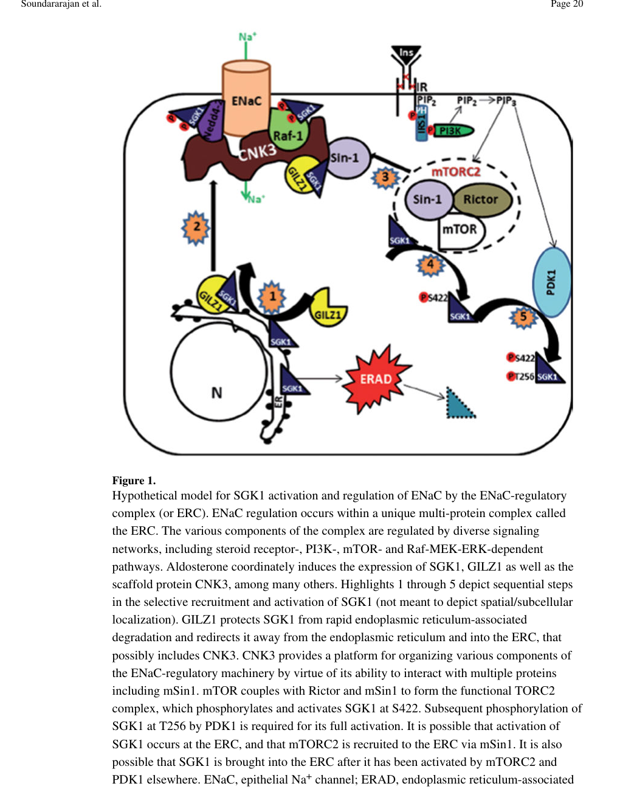

Connector enhancer of kinase suppressor of Ras 3 (CNKSR3) is a multi-domain scaffold protein that coordinates signaling complexes at the apical plasma membrane of epithelial cells. Its primary characterized function is regulation of the epithelial sodium channel (ENaC), where it acts as a central organizing platform for aldosterone-induced sodium transport. CNKSR3 also regulates cell migration through Arf6 activation and modulates MAPK signaling. NOTE - This gene was formerly called MAGI1, but that name is now assigned to the unrelated membrane-associated guanylate kinase Q96QZ7.
| GO Term | Evidence | Action | Reason |
|---|---|---|---|
|
GO:0007167
enzyme-linked receptor protein signaling pathway
|
IBA
GO_REF:0000033 |
REMOVE |
Summary: IBA annotation based on phylogenetic inference. CNKSR3 is a scaffold protein involved in multiple signaling pathways including HGF-induced Arf6 activation and aldosterone-ENaC signaling. While the protein participates in signaling downstream of receptors, the specific connection to enzyme-linked receptors is indirect and the term is too general for this scaffold protein's core functions.
Reason: The term enzyme-linked receptor protein signaling pathway is overly
broad and the more specific term GO:0009966 regulation of signal
transduction is already accepted as an IEA annotation elsewhere in
this review (PR #759 review feedback — MODIFY to an already-annotated
term would produce a duplicate; REMOVE is the correct action).
CNKSR3's best-characterized roles are aldosterone-ENaC scaffolding
and HGF/Arf6 modulation, both already captured.
Supporting Evidence:
PMID:22085542
Knockdown of this protein impairs HGF-induced Arf6 activation and migration in response to HGF treatment
file:human/MAGI1/MAGI1-uniprot.txt
Acts as a scaffold protein coordinating the assembly of an ENaC-regulatory complex
|
|
GO:0030674
protein-macromolecule adaptor activity
|
IBA
GO_REF:0000033 |
ACCEPT |
Summary: IBA annotation for adaptor/scaffold function. This is well-supported and represents a core molecular function of CNKSR3. The protein coordinates assembly of the ENaC-regulatory complex by binding multiple partners including SCNN1A, SCNN1B, NEDD4L, RAF1, and SGK1. It also scaffolds HGF-Arf6 signaling components.
Reason: This accurately captures CNKSR3's primary molecular function as a scaffold/adaptor protein that brings together multiple signaling components. Well-supported by experimental evidence.
Supporting Evidence:
file:human/MAGI1/MAGI1-uniprot.txt
Acts as a scaffold protein coordinating the assembly of an ENaC-regulatory complex (ERC). Interacts directly with SCNN1A (ENaC subunit alpha) and SCNN1B (ENaC subunit beta) C-terminal tails. Interacts with ENaC regulatory proteins NEDD4L, RAF1 and SGK1.
file:human/MAGI1/MAGI1-deep-research-perplexity-lite.md
See deep research file for comprehensive analysis
file:human/MAGI1/MAGI1-deep-research-falcon.md
CNKSR3 is positioned as an aldosterone/mineralocorticoid receptor (MR)-regulated scaffold that is required for ENaC-mediated sodium transport in aldosterone-responsive distal nephron epithelia (connecting tubule and cortical collecting duct)
|
|
GO:0005737
cytoplasm
|
IEA
GO_REF:0000120 |
ACCEPT |
Summary: IEA annotation based on InterPro domains and UniProtKB subcellular location. CNKSR3 is indeed found in cytoplasm, though its most functionally important localization is at the apical plasma membrane where it regulates ENaC. Cytoplasmic localization is confirmed but represents a secondary or transit location.
Reason: Accurate but not the most informative localization. CNKSR3 is present in cytoplasm as stated in UniProt, though apical plasma membrane is the more functionally relevant location.
Supporting Evidence:
file:human/MAGI1/MAGI1-uniprot.txt
SUBCELLULAR LOCATION: Cytoplasm. Apical cell membrane; Peripheral membrane protein.
|
|
GO:0009966
regulation of signal transduction
|
IEA
GO_REF:0000002 |
ACCEPT |
Summary: IEA annotation from InterPro domain IPR010599 (CNK2/3 domain). This is appropriate - CNKSR3 regulates multiple signal transduction pathways including MAPK/ERK signaling (negative regulation) and aldosterone-ENaC signaling (positive regulation of sodium transport).
Reason: Accurate representation of CNKSR3's biological role as a regulator of signaling pathways. The protein negatively regulates ERK1/2 cascade and peptidyl-serine phosphorylation while positively regulating ENaC-mediated sodium transport.
Supporting Evidence:
file:human/MAGI1/MAGI1-uniprot.txt
negative regulation of ERK1 and ERK2 cascade; ISS:UniProtKB. negative regulation of peptidyl-serine phosphorylation; ISS:UniProtKB. positive regulation of sodium ion transport; ISS:UniProtKB.
PMID:22101317
The first study addressing the mechanistic aspects of CNK3 function revealed that CNK3 expression significantly interferes with the activation of the Raf-1/MEK1/2/ERK1/2 signaling cascade
|
|
GO:0016020
membrane
|
IEA
GO_REF:0000002 |
MODIFY |
Summary: IEA annotation from InterPro. While CNKSR3 is a peripheral membrane protein at the apical plasma membrane, this extremely general term provides minimal information. More specific membrane localization terms are more appropriate.
Reason: The term 'membrane' is too general. CNKSR3 specifically localizes to the apical plasma membrane where it functions in ENaC regulation. A more specific term is warranted.
Proposed replacements:
apical plasma membrane
Supporting Evidence:
file:human/MAGI1/MAGI1-uniprot.txt
SUBCELLULAR LOCATION: Apical cell membrane; Peripheral membrane protein
|
|
GO:0016324
apical plasma membrane
|
IEA
GO_REF:0000044 |
ACCEPT |
Summary: IEA annotation from UniProtKB subcellular location vocabulary. This is accurate and functionally important - CNKSR3 localizes to the apical plasma membrane of epithelial cells where it coordinates the ENaC-regulatory complex.
Reason: This is the most functionally relevant subcellular location for CNKSR3. The protein is specifically targeted to the apical membrane where it regulates ENaC.
Supporting Evidence:
file:human/MAGI1/MAGI1-uniprot.txt
SUBCELLULAR LOCATION: Cytoplasm. Apical cell membrane; Peripheral membrane protein. Acts as a scaffold protein coordinating the assembly of an ENaC-regulatory complex (ERC).
|
|
GO:0005515
protein binding
|
IPI
PMID:25416956 A proteome-scale map of the human interactome network. |
REMOVE |
Summary: IPI evidence from proteome-scale interactome study identifying interaction with NMI (Q13287). While protein binding is technically correct, it is uninformative as a molecular function annotation. CNKSR3's specific function is as a protein-macromolecule adaptor, which is already captured by GO:0030674.
Reason: The term 'protein binding' is uninformative per curation guidelines. The specific adaptor function is better captured by GO:0030674 (protein-macromolecule adaptor activity). Large-scale interactome studies often identify interactions that may not be functionally relevant to core gene function.
Supporting Evidence:
PMID:25416956
A proteome-scale map of the human interactome network.
|
|
GO:0005515
protein binding
|
IPI
PMID:32296183 A reference map of the human binary protein interactome. |
REMOVE |
Summary: IPI evidence from binary protein interactome reference map identifying multiple interactions. While protein binding is correct, it is redundant and uninformative given the more specific GO:0030674 annotation.
Reason: Uninformative and redundant with the more specific adaptor activity term. This is from a large-scale binary interactome study.
Supporting Evidence:
PMID:32296183
Apr 8. A reference map of the human binary protein interactome.
|
|
GO:0005515
protein binding
|
IPI
PMID:40205054 Multimodal cell maps as a foundation for structural and func... |
REMOVE |
Summary: IPI evidence from multimodal cell atlas study. Another protein binding annotation that is uninformative compared to the specific adaptor function already annotated.
Reason: Uninformative and redundant. Large-scale proteomics study. The specific molecular function is better captured by GO:0030674.
Supporting Evidence:
PMID:40205054
Apr 9. Multimodal cell maps as a foundation for structural and functional genomics.
|
|
GO:0005829
cytosol
|
IDA
GO_REF:0000052 |
ACCEPT |
Summary: IDA evidence from immunofluorescence data (HPA project). Cytosol is a more specific cytoplasmic compartment and represents where CNKSR3 is found when not at the membrane. This is consistent with the protein's peripheral membrane association - it can be in cytosol and recruited to apical membrane.
Reason: Supported by direct experimental evidence from immunofluorescence. Cytosol localization is consistent with CNKSR3 being a peripheral (not integral) membrane protein that can shuttle between cytosol and membrane.
Supporting Evidence:
GO_REF:0000052
Gene Ontology annotation based on curation of immunofluorescence data from Human Protein Atlas project
|
|
GO:0005515
protein binding
|
IPI
PMID:22085542 CNK3 and IPCEF1 produce a single protein that is required fo... |
REMOVE |
Summary: IPI evidence from the CNK3/IPCEF1 study showing interactions relevant to HGF-Arf6 signaling. While this paper provides important functional context, the protein binding annotation itself is uninformative.
Reason: Although PMID:22085542 is a key functional paper showing CNKSR3 interacts with cytohesin 2 and is required for Arf6 activation, the generic "protein binding" annotation is uninformative. The specific adaptor function (GO:0030674) is more appropriate.
Supporting Evidence:
PMID:22085542
2011 Nov 7. CNK3 and IPCEF1 produce a single protein that is required for HGF dependent Arf6 activation and migration.
|
|
GO:0010765
positive regulation of sodium ion transport
|
ISS
GO_REF:0000024 |
ACCEPT |
Summary: ISS annotation based on mouse ortholog Q8BMA3. This represents a core function of CNKSR3 - it positively regulates ENaC-mediated sodium transport in response to aldosterone. This is the protein's best-characterized biological role in kidney epithelial cells.
Reason: This is a core biological function of CNKSR3. The protein regulates aldosterone-induced ENaC-mediated sodium transport through coordinating the assembly of the ENaC-regulatory complex. Well-supported by multiple studies.
Supporting Evidence:
file:human/MAGI1/MAGI1-uniprot.txt
FUNCTION: Involved in transepithelial sodium transport. Regulates aldosterone-induced and epithelial sodium channel (ENaC)-mediated sodium transport through regulation of ENaC cell surface expression. Acts as a scaffold protein coordinating the assembly of an ENaC-regulatory complex (ERC).
PMID:22101317
CNK3 expression correlates with, and is required for, ENaC-mediated Na+ transport in renal epithelial cells
PMID:22506713
CNK3 expression correlates with, and is critically required for, ENaC-mediated Na+ transport in renal epithelial cells
|
|
GO:0033137
negative regulation of peptidyl-serine phosphorylation
|
ISS
GO_REF:0000024 |
KEEP AS NON CORE |
Summary: ISS annotation based on mouse ortholog. CNKSR3 scaffold proteins
regulate kinase signaling cascades and this annotation likely reflects
regulation of SGK1 or other serine kinases in the ENaC regulatory
complex, or broader effects on MAPK pathway serine phosphorylation.
Downgraded from ACCEPT to KEEP_AS_NON_CORE per PR #759 review feedback:
the rationale cites indirect kinase-interaction evidence without direct
biochemical demonstration of CNKSR3 negatively regulating peptidyl-
serine phosphorylation.
Reason: Indirect evidence — CNKSR3 interacts with SGK1 and RAF1, but no direct
biochemical assay shows CNKSR3 reduces serine phosphorylation. The
annotation is plausible but uncorroborated by direct evidence.
Supporting Evidence:
file:human/MAGI1/MAGI1-uniprot.txt
Interacts with ENaC regulatory proteins NEDD4L, RAF1 and SGK1. The PDZ domain is required for interaction with ENaC and SGK1, but not for interaction with NEDDL4 and RAF1.
|
|
GO:0070373
negative regulation of ERK1 and ERK2 cascade
|
ISS
GO_REF:0000024 |
ACCEPT |
Summary: ISS annotation based on mouse ortholog. CNKSR3 negatively regulates MAPK/ERK signaling. CNK family proteins are known scaffold proteins in Ras/MAPK pathways, and CNKSR3 specifically acts as a negative regulator of the ERK1/2 cascade. Review literature explicitly links CNK3 to interference with the Raf-1/MEK1/2/ERK1/2 cascade.
Reason: Represents an important regulatory function of CNKSR3 beyond its ENaC role. CNK proteins are scaffolds in Ras/MAPK signaling pathways, and CNKSR3 negatively regulates ERK1/2. This is consistent with the protein's domain structure and family membership.
Supporting Evidence:
file:human/MAGI1/MAGI1-uniprot.txt
negative regulation of ERK1 and ERK2 cascade; ISS:UniProtKB. SIMILARITY - Belongs to the CNKSR family.
PMID:22506713
The first study addressing the mechanistic aspects of CNK3 function revealed that CNK3 expression significantly interferes with the activation of the Raf-1/MEK1/2/ERK1/2 signaling cascade
|
Q: What is the molecular mechanism by which CNKSR3 PDZ domain selectively binds ENaC subunits versus other PDZ domain ligands?
Suggested experts: Structural biologists specializing in PDZ domain interactions, Renal physiologists studying ENaC regulation
Q: How does aldosterone signaling lead to CNKSR3 upregulation and recruitment to the apical membrane?
Suggested experts: Researchers studying mineralocorticoid receptor signaling, Epithelial cell biologists
Q: What is the relative importance of CNKSR3's ENaC regulatory function versus its HGF-Arf6 scaffolding function in different tissue contexts?
Suggested experts: Renal physiologists, Cancer cell migration researchers
Q: Does CNKSR3 have tissue-specific isoforms or splice variants with distinct functions beyond the CNK3/IPCEF1 fusion proteins?
Suggested experts: RNA biology researchers, Epithelial tissue specialists
Experiment: Determine crystal or cryo-EM structure of CNKSR3 PDZ domain in complex with ENaC subunit C-terminal peptides to understand binding specificity
Hypothesis: The PDZ domain has specific structural features that enable high-affinity binding to ENaC tails
Type: Structure determination
Experiment: Live-cell imaging of CNKSR3 dynamics at the apical membrane in response to aldosterone treatment to understand recruitment kinetics
Hypothesis: Aldosterone induces rapid recruitment of CNKSR3 to apical membrane where it stabilizes ENaC
Type: Cell biology/Imaging
Experiment: Reconstitute the complete ENaC-regulatory complex in vitro with purified CNKSR3, ENaC subunits, SGK1, RAF1, and NEDD4L to map binding interfaces and stoichiometry
Hypothesis: CNKSR3 can simultaneously bind multiple complex components through distinct domains
Type: Biochemistry
Experiment: CNKSR3 knockout in kidney epithelial cells with rescue by domain deletion mutants to determine which domains are essential for ENaC regulation versus Arf6/migration functions
Hypothesis: PDZ domain is critical for ENaC function but dispensable for Arf6 scaffolding
Type: Functional genomics
Experiment: Generate CNKSR3 conditional knockout mice and assess blood pressure, sodium handling, and response to aldosterone challenge
Hypothesis: Loss of CNKSR3 will impair aldosterone-mediated sodium retention and blood pressure regulation
Type: Physiological
The research report should be a detailed narrative explaining the function, biological processes, and localization of the gene product. Citations should be given for all claims.
You should prioritize authoritative reviews and primary scientific literature when conducting research. You can supplement
this with annotations you find in gene/protein databases, but these can be outdated or inaccurate.
We are specifically interested in the primary function of the gene - for enzymes, what reaction is catalyzed, and what is the substrate specificity? For transporters, what is the substrate? For structural proteins or adapters, what is the broader structural role? For signaling molecules, what is the role in the pathway.
We are interested in where in or outside the cell the gene product carries out its function.
We are also interested in the signaling or biochemical pathways in which the gene functions. We are less interested in broad pleiotropic effects, except where these elucidate the precise role.
Include evidence where possible. We are interested in both experimental evidence as well as inference from structure, evolution, or bioinformatic analysis. Precise studies should be prioritized over high-throughput, where available.
The research target here is CNKSR family member 3 (CNKSR3), also called CNK3 or connector enhancer of kinase suppressor of Ras 3, a CNK-family multidomain scaffold/adaptor implicated in aldosterone-dependent renal sodium handling. This identity is consistently used in mechanistic renal physiology literature describing a SAM–CRIC–PDZ protein regulating ENaC and MAPK signaling (soundararajan2012theroleof pages 5-7, soundararajan2012organizationofthe pages 11-12, soundararajan2012theroleof pages 4-5).
The synonym string sometimes encountered in resources (e.g., “MAGI1”) is potentially misleading in this context: MAGI1 is widely used for a different multi-PDZ tight-junction scaffold (not supported by the mechanistic CNK3/ENaC literature retrieved here). No mechanistic source in this evidence set uses MAGI1 as the accepted symbol for CNKSR3 (soundararajan2012theroleof pages 5-7, soundararajan2012organizationofthe pages 11-12).
CNKSR3 (CNK3) is described as the third mammalian CNK isoform with a modular architecture typical of scaffold proteins: N-terminal SAM domain, a conserved CNK-specific region (CRIC), and a PDZ domain (soundararajan2012theroleof pages 5-7, soundararajan2012organizationofthe pages 11-12). Reviews further emphasize that CNKSR3 is smaller than other CNK homologs and lacks the C-terminal region that harbors a pleckstrin homology (PH) domain present in other family members (soundararajan2012theroleof pages 5-7, soundararajan2012theroleof pages 4-5).
These domains support a “connector/enhancer” role rather than enzymatic catalysis:
- SAM domain: mediates protein–protein interactions via homo/heterodimerization (soundararajan2012organizationofthe pages 11-12).
- CRIC domain: a conserved interaction region in CNK proteins; has documented interaction roles in CNK-family contexts (soundararajan2012organizationofthe pages 11-12).
- PDZ domain: binds specific C-terminal motifs of partner proteins; PDZ-containing proteins frequently serve as molecular scaffolds assembling multi-protein complexes (soundararajan2012organizationofthe pages 11-12).
A central organizing concept in the CNKSR3 literature is the ENaC-regulatory complex (ERC)—a dynamic, multi-protein assembly at/near the plasma membrane that integrates aldosterone-driven signals (and other cues such as insulin/PI3K signaling) to control ENaC surface expression and activity (soundararajan2012theroleof pages 4-5, soundararajan2012theroleof pages 5-7, soundararajan2012organizationofthe media 483107b4). CNKSR3 is repeatedly proposed as a scaffold component of this ERC, coordinating stimulatory and inhibitory nodes (soundararajan2012theroleof pages 5-7, soundararajan2012organizationofthe pages 11-12).
Across reviews and experimental summaries, CNKSR3 is positioned as an aldosterone/mineralocorticoid receptor (MR)-regulated scaffold that is required for ENaC-mediated sodium transport in aldosterone-responsive distal nephron epithelia (connecting tubule and cortical collecting duct) (soundararajan2012theroleof pages 5-7, valinsky2019aldosteroneandion pages 4-7, ziera2009identificationandfunctional pages 56-60).
Importantly, CNKSR3 is not an enzyme and no catalytic reaction is attributed to it in this evidence set; rather it is a regulatory adaptor that shapes signaling and trafficking/regulatory protein assemblies controlling ENaC.
A 2023 authoritative review of aldosterone renal action frames aldosterone-induced factors (including CNKSR3) as often acting via disinhibition—suppressing tonic inhibitory mechanisms (e.g., Raf-MAPK/ERK and Nedd4-2) rather than directly “turning on” transporters (johnston2023aldosteronerenalaction pages 34-36). Within this framework, CNKSR3 is described as participating in the dynamic assemblies that ultimately enhance ENaC-dependent Na+ reabsorption in response to aldosterone (johnston2023aldosteronerenalaction pages 34-36).
Mechanistically, CNKSR3 is repeatedly linked to modulation of the Raf-1/MEK1/2/ERK1/2 (MAPK) cascade:
- CNKSR3 expression is reported to interfere with activation of the Raf-1/MEK/ERK pathway, consistent with relief of ERK-mediated ENaC inhibition (soundararajan2012theroleof pages 5-7, soundararajan2012organizationofthe pages 11-12).
- In collecting-duct cell models, CNKSR3 knockdown increases MEK/ERK phosphorylation, and MEK inhibition (U0126) can increase ENaC-dependent transepithelial current in CNKSR3-silenced cells, supporting an ERK-dependent mechanism (ziera2009identificationandfunctional pages 60-63).
The most directly stated localization in this evidence set is that CNKSR3 participates in a plasma-membrane-localized ENaC regulatory complex, consistent with a tethering/scaffold function (valinsky2019aldosteroneandion pages 4-7). In that context, CNKSR3 is reported to interact with ENaC, SGK1, Raf-1, and Nedd4-2 in a membrane complex (valinsky2019aldosteroneandion pages 4-7).
In addition, proteomics summarized in a 2012 review identified peptides from all three PP2A subunits as abundant CNK3 binding partners, suggesting phosphoregulation may be integrated into CNKSR3-centered scaffolding (soundararajan2012theroleof pages 5-7).
A schematic depiction of the ERC (including CNK3/CNKSR3 and core regulators such as SGK1, GILZ1, Nedd4-2, and Raf-1) is shown in Figure 1 of Soundararajan et al. 2012 (soundararajan2012organizationofthe media 483107b4).
Multiple sources converge on CNKSR3 being a direct MR target gene:
- Promoter-level regulation: CNKSR3’s promoter is described as harboring two functional MR-binding loci near the transcription start site (review summary) (soundararajan2012organizationofthe pages 11-12).
- ChIP and promoter-element mapping: ChIP-chip/ChIP-qPCR evidence identifies MR binding regions for cnksr3, and mutation analyses indicate three of four predicted GRE-like elements in a distal MR-binding region contribute to aldosterone responsiveness (ziera2009identificationandfunctional pages 63-65).
- Quantitative induction: In a review of aldosterone-ion channel regulation, aldosterone (1 nM) is reported to drive ~3-fold increase in CNKSR3 mRNA alongside MR binding at two promoter regions (valinsky2019aldosteroneandion pages 4-7).
Functional perturbation experiments support necessity:
- CNKSR3 knockdown: An ~80% reduction in CNKSR3 mRNA was associated with an ~75% decrease in ENaC-mediated short-circuit current (valinsky2019aldosteroneandion pages 4-7).
- Overexpression/knockdown in collecting-duct models: CNKSR3 overexpression increased ENaC-dependent transepithelial Na+ transport, while silencing “almost abrogated” transport in an aldosterone-responsive collecting-duct cell model (ziera2009identificationandfunctional pages 56-60).
A 2023 Comprehensive Physiology review explicitly includes CNKSR3 among aldosterone-regulated genes participating in dynamic assemblies that increase Na+ absorption by suppressing tonic inhibitors of ENaC (johnston2023aldosteronerenalaction pages 34-36).
- Publication date/URL: March 2023; https://doi.org/10.1002/cphy.c190043 (johnston2023aldosteronerenalaction pages 34-36).
A 2024 Frontiers in Endocrinology review summarizes genome-wide association evidence implicating a locus near SCAF8/CNKSR3 in DKD risk:
- Variant: rs12523822 near SCAF8/CNKSR3.
- Reported association: OR = 0.73, p = 1.3×10−8 (meta-analysis of T1D+T2D DKD; 5,226 cases vs 8,510 controls). A transethnic analysis reported a ~43% lower risk in American Indians (p = 5.7×10−9) (sandholm2023geneticandepigenetic pages 3-5).
The review further provides mechanistic plausibility by reiterating CNKSR3 as a direct MR target, highly expressed in renal cortical collecting ducts, involved in transepithelial sodium transport, and upregulated by physiologic aldosterone (sandholm2023geneticandepigenetic pages 3-5).
- Publication date/URL: May 2024; https://doi.org/10.3389/fendo.2023.1163001 (sandholm2023geneticandepigenetic pages 3-5).
A 2024 epigenetic/genetic study in Korean veterans reported CNKSR3 among genes linked to significant CpGs in the context of Agent Orange exposure and type 2 diabetes (T2D). In the excerpt, CNKSR3 is described as highly expressed in renal collecting ducts, regulating sodium transport, and upregulated by aldosterone (seo2024epigeneticlinkbetween pages 9-10). The study reported 2,135 AO-related differentially methylated positions (DMPs) overall, but the provided excerpt does not include CNKSR3-specific CpG identifiers or effect sizes (seo2024epigeneticlinkbetween pages 9-10).
- Publication date/URL: July 2024; https://doi.org/10.3389/fendo.2024.1375459 (seo2024epigeneticlinkbetween pages 9-10).
Given CNKSR3’s role in aldosterone/MR-dependent ENaC control (central to sodium balance and blood pressure regulation), the gene is mechanistically relevant to disorders of sodium handling, including hypertension-related phenotypes, though definitive clinical translation remains limited in the retrieved primary mechanistic evidence (valinsky2019aldosteroneandion pages 4-7, soundararajan2012organizationofthe pages 11-12).
The DKD GWAS signal near SCAF8/CNKSR3 provides a human genetic anchor suggesting CNKSR3-regulated physiology may influence DKD susceptibility (sandholm2023geneticandepigenetic pages 3-5). This positions CNKSR3 as a candidate gene for mechanistic follow-up (e.g., eQTL colocalization in kidney, functional allelic assays in collecting-duct models), though the 2024 review itself emphasizes that many GWAS hits are noncoding and target-gene assignment requires additional regulatory mapping (sandholm2023geneticandepigenetic pages 3-5).
Open Targets aggregates GWAS credible-set evidence connecting CNKSR3 to pregnancy-induced hypertension and glomerulonephritis (OpenTargets Search: -CNKSR3). These are best treated as hypothesis-generating associations rather than confirmed mechanisms, but they are consistent with CNKSR3’s role in kidney sodium handling pathways.
- URL: https://platform.opentargets.org/target/ENSG00000153721 (OpenTargets Search: -CNKSR3).
Renal physiology reviews characterize CNKSR3 as a plausible hormone-induced scaffold that helps organize ENaC regulatory machinery and suppress inhibitory signaling (Raf–MEK–ERK and/or Nedd4-2 mediated effects), thereby enabling aldosterone-stimulated sodium reabsorption (johnston2023aldosteronerenalaction pages 34-36, soundararajan2012theroleof pages 5-7, soundararajan2012organizationofthe pages 11-12).
However, expert sources also explicitly highlight key remaining uncertainties:
- Whether CNKSR3 directly binds ENaC and whether it changes ENaC surface expression versus open probability remain unresolved in the summarized evidence (soundararajan2012organizationofthe pages 11-12, soundararajan2012organizationofthe pages 12-14).
- The precise ERC composition and how it varies by time/compartment (e.g., lipid raft association) are noted as open questions (soundararajan2012organizationofthe pages 12-14).
The following table compiles key mechanistic, interaction, and 2023–2024 translational evidence, including quantitative statistics and URLs/DOIs.
| Claim/Topic | Key findings | Evidence type (review/primary/GWAS/epigenetic/database) | Species/cell context | Quantitative data | Source (author year, journal) | URL/DOI |
|---|---|---|---|---|---|---|
| Identity verification | Target literature matches CNKSR3/CNK3 = connector enhancer of kinase suppressor of Ras 3, a CNK-family scaffold; retrieved mechanistic sources do not support conflation with MAGI1 | Review synthesis | Human/mammalian renal physiology literature | None reported | Soundararajan et al. 2012, Mol Cell Endocrinol; Soundararajan et al. 2012, Crit Rev Biochem Mol Biol (soundararajan2012organizationofthe pages 11-12, soundararajan2012theroleof pages 5-7) | https://doi.org/10.1016/j.mce.2011.11.003 ; https://doi.org/10.3109/10409238.2012.678285 |
| Domain architecture | CNKSR3 has SAM, CRIC, and PDZ domains; reviews note it is smaller than other CNKs and lacks the C-terminal PH domain present in other family members | Review | Mammalian CNK family; renal epithelial context | No effect size | Soundararajan et al. 2012, Mol Cell Endocrinol; Soundararajan et al. 2012, Crit Rev Biochem Mol Biol (soundararajan2012theroleof pages 5-7, soundararajan2012theroleof pages 4-5, soundararajan2012organizationofthe pages 11-12) | https://doi.org/10.1016/j.mce.2011.11.003 ; https://doi.org/10.3109/10409238.2012.678285 |
| Inferred molecular role | Modular architecture supports a scaffold/adaptor role organizing aldosterone-responsive ENaC-regulatory machinery and modulating Raf-1/MEK/ERK signaling | Review/primary summary | Renal collecting duct epithelial models | No single numeric estimate | Ziera 2009; Soundararajan et al. 2012 (soundararajan2012theroleof pages 5-7, ziera2009identificationandfunctional pages 56-60) | https://doi.org/10.14279/depositonce-2286 ; https://doi.org/10.1016/j.mce.2011.11.003 |
| Direct MR target gene | CNKSR3 is a direct mineralocorticoid receptor (MR) target; promoter harbors MR-binding loci and distal GRE cluster contributing to aldosterone responsiveness | Primary + review summary | HEK293-hMR+, M1-rMR+ cells; collecting duct | MR binding at 2 promoter regions; 3 of 4 predicted GREs in distal region contributed in mutation analysis | Ziera 2009; Soundararajan et al. 2012 (ziera2009identificationandfunctional pages 63-65, soundararajan2012organizationofthe pages 11-12, soundararajan2012theroleof pages 5-7) | https://doi.org/10.14279/depositonce-2286 ; https://doi.org/10.3109/10409238.2012.678285 ; https://doi.org/10.1016/j.mce.2011.11.003 |
| Aldosterone induction | Aldosterone induces CNKSR3 transcript expression downstream of MR | Primary/review summary | Distal nephron/collecting duct models | ~3-fold increase in CNKSR3 mRNA after 1 nM aldosterone; qPCR induction after 4 h, 10 nM aldosterone also reported | Valinsky et al. 2019, Vitam Horm; Ziera 2009 (valinsky2019aldosteroneandion pages 4-7, ziera2009identificationandfunctional pages 56-60) | https://doi.org/10.1016/bs.vh.2018.10.004 ; https://doi.org/10.14279/depositonce-2286 |
| Tissue/localization pattern | High expression in connecting tubule (CNT) and cortical collecting duct (CCD), the aldosterone-sensitive nephron segments | Primary/review summary | Kidney distal nephron | No single numeric estimate | Ziera 2009; Soundararajan et al. 2012 (ziera2009identificationandfunctional pages 63-65, soundararajan2012theroleof pages 5-7, valinsky2019aldosteroneandion pages 4-7) | https://doi.org/10.14279/depositonce-2286 ; https://doi.org/10.1016/j.mce.2011.11.003 ; https://doi.org/10.1016/bs.vh.2018.10.004 |
| ENaC regulation: necessity | CNKSR3 is required for ENaC-mediated Na+ transport; knockdown strongly impairs amiloride-sensitive current | Primary/review summary | Collecting duct epithelial cells / short-circuit current assays | ~80% CNKSR3 knockdown caused ~75% decrease in ENaC-mediated short-circuit current; shRNA silencing “almost abrogated” transport | Valinsky et al. 2019; Ziera 2009 (valinsky2019aldosteroneandion pages 4-7, ziera2009identificationandfunctional pages 56-60) | https://doi.org/10.1016/bs.vh.2018.10.004 ; https://doi.org/10.14279/depositonce-2286 |
| ENaC regulation: sufficiency | CNKSR3 overexpression enhances aldosterone-dependent ENaC-mediated transepithelial Na+ transport | Primary | M1-rMR+ collecting duct model | Directional increase reported; no precise fold value in retrieved excerpts | Ziera 2009 (ziera2009identificationandfunctional pages 56-60, ziera2009identificationandfunctional pages 60-63) | https://doi.org/10.14279/depositonce-2286 |
| MAPK/ERK mechanism | CNKSR3 restrains Raf-1/MEK/ERK signaling; loss of CNKSR3 increases MEK1/2 and ERK1/2 phosphorylation, consistent with relief of tonic ENaC inhibition | Primary/review summary | M1-rMR+ cells; renal epithelial context | Knockdown increased phospho-MEK1/2 and phospho-ERK1/2; MEK inhibitor U0126 markedly increased ΔISC in CNKSR3-silenced cells | Ziera 2009; Soundararajan et al. 2012; Valinsky et al. 2019 (ziera2009identificationandfunctional pages 60-63, soundararajan2012theroleof pages 5-7, valinsky2019aldosteroneandion pages 4-7) | https://doi.org/10.14279/depositonce-2286 ; https://doi.org/10.1016/j.mce.2011.11.003 ; https://doi.org/10.1016/bs.vh.2018.10.004 |
| Interaction partners / ERC | CNKSR3 is proposed/observed in an ENaC regulatory complex (ERC) with ENaC, SGK1, Raf-1, Nedd4-2 at/near the plasma membrane; GILZ may cooperate functionally, though direct inclusion was not consistently detected | Review/primary summary | Distal nephron epithelial models | No stoichiometric values | Valinsky et al. 2019; Soundararajan et al. 2012 (valinsky2019aldosteroneandion pages 4-7, soundararajan2012theroleof pages 5-7, soundararajan2012organizationofthe media 483107b4) | https://doi.org/10.1016/bs.vh.2018.10.004 ; https://doi.org/10.1016/j.mce.2011.11.003 |
| Additional binding partners | Proteomics identified peptides from all three PP2A subunits as abundant CNKSR3-associated proteins, suggesting phosphoregulation-linked scaffolding | Review citing proteomics | Renal epithelial context | “Most abundant binding partners” in cited proteomics; no numeric enrichment in retrieved excerpt | Soundararajan et al. 2012 (soundararajan2012theroleof pages 5-7) | https://doi.org/10.1016/j.mce.2011.11.003 |
| Expert interpretation | Reviews argue CNKSR3 likely acts as a hormone-induced scaffolding platform that disinhibits ENaC by coordinating stimulatory and inhibitory nodes, but direct effects on ENaC surface abundance vs. channel open probability remain unresolved | Review/expert opinion | Renal physiology | No quantitative metric | Johnston et al. 2023, Compr Physiol; Soundararajan et al. 2012 (johnston2023aldosteronerenalaction pages 34-36, soundararajan2012organizationofthe pages 11-12) | https://doi.org/10.1002/cphy.c190043 ; https://doi.org/10.3109/10409238.2012.678285 |
| 2023 development | Recent renal physiology review places CNKSR3 among aldosterone-induced genes that increase Na+ transport mainly by suppressing tonic inhibitory mechanisms rather than directly activating transporters | Review | Kidney/aldosterone physiology | No CNKSR3-specific fold value in this review | Johnston et al. 2023, Compr Physiol (johnston2023aldosteronerenalaction pages 34-36) | https://doi.org/10.1002/cphy.c190043 |
| 2024 development: DKD genetics | A GWAS/meta-analysis implicated a locus near SCAF8/CNKSR3 in diabetic kidney disease (DKD), giving human genetic support for kidney relevance | GWAS/review | Human, transethnic DKD cohorts | rs12523822; OR 0.73; p = 1.3×10−8 in T1D+T2D DKD meta-analysis; 43% lower risk in American Indians with p = 5.7×10−9; 5,226 cases / 8,510 controls; final meta-analysis 13,736 participants | Sandholm et al. 2024, Front Endocrinol (sandholm2023geneticandepigenetic pages 3-5) | https://doi.org/10.3389/fendo.2023.1163001 |
| 2024 development: epigenetics | Epigenetic study in Korean veterans linked significant T2D-associated CpGs to CNKSR3, highlighting it as a collecting-duct/aldosterone-responsive candidate in metabolic-kidney disease context | Epigenetic study | Human blood methylation/genotype analysis | Study reported 2,135 AO-related DMPs overall; CNKSR3 named among genes with significant CpGs, but no CNKSR3-specific effect size/p-value in retrieved excerpt | Seo et al. 2024, Front Endocrinol (seo2024epigeneticlinkbetween pages 9-10) | https://doi.org/10.3389/fendo.2024.1375459 |
| Disease association aggregation | Open Targets links CNKSR3 to pregnancy-induced hypertension and glomerulonephritis via GWAS credible-set evidence; these are hypothesis-generating rather than definitive mechanistic proof | Database aggregation | Human disease genetics aggregation | Evidence size 5 for listed disease associations in retrieved output | Open Targets Platform query (2025 platform paper cited by tool) (OpenTargets Search: -CNKSR3) | https://platform.opentargets.org/target/ENSG00000153721 |
Table: This table compiles the main mechanistic, experimental, and recent human genetics evidence for human CNKSR3 (UniProt Q6P9H4). It highlights domain structure, aldosterone/MR and ENaC functions, interaction partners, and 2023–2024 disease-relevant findings with quantitative statistics where available.
A schematic model of the ENaC-regulatory complex including CNK3/CNKSR3 and key interacting regulators is shown in Soundararajan et al. (2012), Figure 1 (soundararajan2012organizationofthe media 483107b4).
Some foundational primary results (notably the peer-reviewed FASEB Journal 2009 paper referenced by reviews) were not directly retrievable in this run, so several mechanistic claims rely on authoritative review summaries of those experiments. Where this occurs, the report labels the evidence as “review summary” and cites the reviewing source(s) (soundararajan2012theroleof pages 5-7, soundararajan2012organizationofthe pages 11-12, valinsky2019aldosteroneandion pages 4-7).
References
(soundararajan2012theroleof pages 5-7): Rama Soundararajan, David Pearce, and Tim Ziera. The role of the enac-regulatory complex in aldosterone-mediated sodium transport. Molecular and Cellular Endocrinology, 350:242-247, Mar 2012. URL: https://doi.org/10.1016/j.mce.2011.11.003, doi:10.1016/j.mce.2011.11.003. This article has 107 citations and is from a peer-reviewed journal.
(soundararajan2012organizationofthe pages 11-12): Rama Soundararajan, Ming Lu, and David Pearce. Organization of the enac-regulatory machinery. Critical Reviews in Biochemistry and Molecular Biology, 47:349-359, Jun 2012. URL: https://doi.org/10.3109/10409238.2012.678285, doi:10.3109/10409238.2012.678285. This article has 54 citations and is from a peer-reviewed journal.
(soundararajan2012theroleof pages 4-5): Rama Soundararajan, David Pearce, and Tim Ziera. The role of the enac-regulatory complex in aldosterone-mediated sodium transport. Molecular and Cellular Endocrinology, 350:242-247, Mar 2012. URL: https://doi.org/10.1016/j.mce.2011.11.003, doi:10.1016/j.mce.2011.11.003. This article has 107 citations and is from a peer-reviewed journal.
(soundararajan2012organizationofthe media 483107b4): Rama Soundararajan, Ming Lu, and David Pearce. Organization of the enac-regulatory machinery. Critical Reviews in Biochemistry and Molecular Biology, 47:349-359, Jun 2012. URL: https://doi.org/10.3109/10409238.2012.678285, doi:10.3109/10409238.2012.678285. This article has 54 citations and is from a peer-reviewed journal.
(valinsky2019aldosteroneandion pages 4-7): William C. Valinsky, Rhian M. Touyz, and Alvin Shrier. Aldosterone and ion channels. Vitamins and hormones, 109:105-131, Jan 2019. URL: https://doi.org/10.1016/bs.vh.2018.10.004, doi:10.1016/bs.vh.2018.10.004. This article has 23 citations.
(ziera2009identificationandfunctional pages 56-60): Tim Ziera. Identification and functional characterization of the novel mineralocorticoid receptor target gene cnksr3. ArXiv, Nov 2009. URL: https://doi.org/10.14279/depositonce-2286, doi:10.14279/depositonce-2286. This article has 0 citations.
(johnston2023aldosteronerenalaction pages 34-36): Jermaine G. Johnston, Amanda K. Welch, Brian D. Cain, Peter P. Sayeski, Michelle L. Gumz, and Charles S. Wingo. Aldosterone: renal action and physiological effects. Comprehensive Physiology, 13 2:4409-4491, Mar 2023. URL: https://doi.org/10.1002/cphy.c190043, doi:10.1002/cphy.c190043. This article has 35 citations and is from a peer-reviewed journal.
(ziera2009identificationandfunctional pages 60-63): Tim Ziera. Identification and functional characterization of the novel mineralocorticoid receptor target gene cnksr3. ArXiv, Nov 2009. URL: https://doi.org/10.14279/depositonce-2286, doi:10.14279/depositonce-2286. This article has 0 citations.
(ziera2009identificationandfunctional pages 63-65): Tim Ziera. Identification and functional characterization of the novel mineralocorticoid receptor target gene cnksr3. ArXiv, Nov 2009. URL: https://doi.org/10.14279/depositonce-2286, doi:10.14279/depositonce-2286. This article has 0 citations.
(sandholm2023geneticandepigenetic pages 3-5): Niina Sandholm, Emma H. Dahlström, and Per-Henrik Groop. Genetic and epigenetic background of diabetic kidney disease. Frontiers in Endocrinology, May 2024. URL: https://doi.org/10.3389/fendo.2023.1163001, doi:10.3389/fendo.2023.1163001. This article has 32 citations.
(seo2024epigeneticlinkbetween pages 9-10): Sujin Seo, Ye An Kim, Young Lee, Young Jin Kim, Bong-Jo Kim, Jae Hoon An, Heejin Jin, Ah Ra Do, Kyungtaek Park, Sungho Won, and Je Hyun Seo. Epigenetic link between agent orange exposure and type 2 diabetes in korean veterans. Frontiers in Endocrinology, Jul 2024. URL: https://doi.org/10.3389/fendo.2024.1375459, doi:10.3389/fendo.2024.1375459. This article has 1 citations.
(OpenTargets Search: -CNKSR3): Open Targets Query (-CNKSR3, 5 results). Buniello, A. et al. (2025). Open Targets Platform: facilitating therapeutic hypotheses building in drug discovery. Nucleic Acids Research.
(soundararajan2012organizationofthe pages 12-14): Rama Soundararajan, Ming Lu, and David Pearce. Organization of the enac-regulatory machinery. Critical Reviews in Biochemistry and Molecular Biology, 47:349-359, Jun 2012. URL: https://doi.org/10.3109/10409238.2012.678285, doi:10.3109/10409238.2012.678285. This article has 54 citations and is from a peer-reviewed journal.

The CNKSR3 gene (also known as MAGI1 in some contexts, though these are distinct genes/proteins—see note below) encodes a multifunctional scaffold protein involved in the regulation of key signaling pathways, ion transport, and cell adhesion. Below is a detailed research report on CNKSR3, focusing on its molecular function, biological processes, cellular localization, protein domains, interactions, and disease associations, with a brief clarification regarding MAGI1.
Key References:
- [1] Ma’ayan Lab Harmonizome, CNKSR3 Gene (2025)
- [2] PMC8231924, MAGI1 review (2021)
- [3] GeneCards, CNKSR3 (2025)
- [4] Ma’ayan Lab Harmonizome, MAGI1 Gene (2025)
- [7] UniProt, CNKSR3 (2025)
- [8] Wikipedia, CNKSR3 (2025)
For further details, see the cited sources above.
id: Q6P9H4
gene_symbol: CNKSR3
product_type: PROTEIN
status: COMPLETE
taxon:
id: NCBITaxon:9606
label: Homo sapiens
description: Connector enhancer of kinase suppressor of Ras 3 (CNKSR3) is a
multi-domain scaffold protein that coordinates signaling complexes at the
apical plasma membrane of epithelial cells. Its primary characterized function
is regulation of the epithelial sodium channel (ENaC), where it acts as a
central organizing platform for aldosterone-induced sodium transport. CNKSR3
also regulates cell migration through Arf6 activation and modulates MAPK
signaling. NOTE - This gene was formerly called MAGI1, but that name is now
assigned to the unrelated membrane-associated guanylate kinase Q96QZ7.
existing_annotations:
- term:
id: GO:0007167
label: enzyme-linked receptor protein signaling pathway
evidence_type: IBA
original_reference_id: GO_REF:0000033
review:
summary: IBA annotation based on phylogenetic inference. CNKSR3 is a
scaffold protein involved in multiple signaling pathways including
HGF-induced Arf6 activation and aldosterone-ENaC signaling. While the
protein participates in signaling downstream of receptors, the specific
connection to enzyme-linked receptors is indirect and the term is too
general for this scaffold protein's core functions.
action: REMOVE
reason: |
The term enzyme-linked receptor protein signaling pathway is overly
broad and the more specific term GO:0009966 regulation of signal
transduction is already accepted as an IEA annotation elsewhere in
this review (PR #759 review feedback — MODIFY to an already-annotated
term would produce a duplicate; REMOVE is the correct action).
CNKSR3's best-characterized roles are aldosterone-ENaC scaffolding
and HGF/Arf6 modulation, both already captured.
supported_by:
- reference_id: PMID:22085542
supporting_text: Knockdown of this protein impairs HGF-induced Arf6
activation and migration in response to HGF treatment
- reference_id: file:human/MAGI1/MAGI1-uniprot.txt
supporting_text: Acts as a scaffold protein coordinating the assembly
of an ENaC-regulatory complex
- term:
id: GO:0030674
label: protein-macromolecule adaptor activity
evidence_type: IBA
original_reference_id: GO_REF:0000033
review:
summary: IBA annotation for adaptor/scaffold function. This is
well-supported and represents a core molecular function of CNKSR3. The
protein coordinates assembly of the ENaC-regulatory complex by binding
multiple partners including SCNN1A, SCNN1B, NEDD4L, RAF1, and SGK1. It
also scaffolds HGF-Arf6 signaling components.
action: ACCEPT
reason: This accurately captures CNKSR3's primary molecular function as a
scaffold/adaptor protein that brings together multiple signaling
components. Well-supported by experimental evidence.
supported_by:
- reference_id: file:human/MAGI1/MAGI1-uniprot.txt
supporting_text: Acts as a scaffold protein coordinating the assembly
of an ENaC-regulatory complex (ERC). Interacts directly with SCNN1A
(ENaC subunit alpha) and SCNN1B (ENaC subunit beta) C-terminal
tails. Interacts with ENaC regulatory proteins NEDD4L, RAF1 and
SGK1.
- reference_id: file:human/MAGI1/MAGI1-deep-research-perplexity-lite.md
supporting_text: See deep research file for comprehensive analysis
- reference_id: file:human/MAGI1/MAGI1-deep-research-falcon.md
supporting_text: CNKSR3 is positioned as an aldosterone/mineralocorticoid
receptor (MR)-regulated scaffold that is required for ENaC-mediated
sodium transport in aldosterone-responsive distal nephron epithelia
(connecting tubule and cortical collecting duct)
- term:
id: GO:0005737
label: cytoplasm
evidence_type: IEA
original_reference_id: GO_REF:0000120
review:
summary: IEA annotation based on InterPro domains and UniProtKB
subcellular location. CNKSR3 is indeed found in cytoplasm, though its
most functionally important localization is at the apical plasma
membrane where it regulates ENaC. Cytoplasmic localization is confirmed
but represents a secondary or transit location.
action: ACCEPT
reason: Accurate but not the most informative localization. CNKSR3 is
present in cytoplasm as stated in UniProt, though apical plasma membrane
is the more functionally relevant location.
supported_by:
- reference_id: file:human/MAGI1/MAGI1-uniprot.txt
supporting_text: 'SUBCELLULAR LOCATION: Cytoplasm. Apical cell membrane;
Peripheral membrane protein.'
- term:
id: GO:0009966
label: regulation of signal transduction
evidence_type: IEA
original_reference_id: GO_REF:0000002
review:
summary: IEA annotation from InterPro domain IPR010599 (CNK2/3 domain).
This is appropriate - CNKSR3 regulates multiple signal transduction
pathways including MAPK/ERK signaling (negative regulation) and
aldosterone-ENaC signaling (positive regulation of sodium transport).
action: ACCEPT
reason: Accurate representation of CNKSR3's biological role as a regulator
of signaling pathways. The protein negatively regulates ERK1/2 cascade
and peptidyl-serine phosphorylation while positively regulating
ENaC-mediated sodium transport.
supported_by:
- reference_id: file:human/MAGI1/MAGI1-uniprot.txt
supporting_text: negative regulation of ERK1 and ERK2 cascade;
ISS:UniProtKB. negative regulation of peptidyl-serine
phosphorylation; ISS:UniProtKB. positive regulation of sodium ion
transport; ISS:UniProtKB.
- reference_id: PMID:22101317
supporting_text: The first study addressing the mechanistic aspects of
CNK3 function revealed that CNK3 expression significantly interferes
with the activation of the Raf-1/MEK1/2/ERK1/2 signaling cascade
- term:
id: GO:0016020
label: membrane
evidence_type: IEA
original_reference_id: GO_REF:0000002
review:
summary: IEA annotation from InterPro. While CNKSR3 is a peripheral
membrane protein at the apical plasma membrane, this extremely general
term provides minimal information. More specific membrane localization
terms are more appropriate.
action: MODIFY
reason: The term 'membrane' is too general. CNKSR3 specifically localizes
to the apical plasma membrane where it functions in ENaC regulation. A
more specific term is warranted.
proposed_replacement_terms:
- id: GO:0016324
label: apical plasma membrane
supported_by:
- reference_id: file:human/MAGI1/MAGI1-uniprot.txt
supporting_text: 'SUBCELLULAR LOCATION: Apical cell membrane; Peripheral
membrane protein'
- term:
id: GO:0016324
label: apical plasma membrane
evidence_type: IEA
original_reference_id: GO_REF:0000044
review:
summary: IEA annotation from UniProtKB subcellular location vocabulary.
This is accurate and functionally important - CNKSR3 localizes to the
apical plasma membrane of epithelial cells where it coordinates the
ENaC-regulatory complex.
action: ACCEPT
reason: This is the most functionally relevant subcellular location for
CNKSR3. The protein is specifically targeted to the apical membrane
where it regulates ENaC.
supported_by:
- reference_id: file:human/MAGI1/MAGI1-uniprot.txt
supporting_text: 'SUBCELLULAR LOCATION: Cytoplasm. Apical cell membrane;
Peripheral membrane protein. Acts as a scaffold protein coordinating the
assembly of an ENaC-regulatory complex (ERC).'
- term:
id: GO:0005515
label: protein binding
evidence_type: IPI
original_reference_id: PMID:25416956
review:
summary: IPI evidence from proteome-scale interactome study identifying
interaction with NMI (Q13287). While protein binding is technically
correct, it is uninformative as a molecular function annotation.
CNKSR3's specific function is as a protein-macromolecule adaptor, which
is already captured by GO:0030674.
action: REMOVE
reason: The term 'protein binding' is uninformative per curation
guidelines. The specific adaptor function is better captured by
GO:0030674 (protein-macromolecule adaptor activity). Large-scale
interactome studies often identify interactions that may not be
functionally relevant to core gene function.
supported_by:
- reference_id: PMID:25416956
supporting_text: A proteome-scale map of the human interactome
network.
- term:
id: GO:0005515
label: protein binding
evidence_type: IPI
original_reference_id: PMID:32296183
review:
summary: IPI evidence from binary protein interactome reference map
identifying multiple interactions. While protein binding is correct, it
is redundant and uninformative given the more specific GO:0030674
annotation.
action: REMOVE
reason: Uninformative and redundant with the more specific adaptor
activity term. This is from a large-scale binary interactome study.
supported_by:
- reference_id: PMID:32296183
supporting_text: Apr 8. A reference map of the human binary protein
interactome.
- term:
id: GO:0005515
label: protein binding
evidence_type: IPI
original_reference_id: PMID:40205054
review:
summary: IPI evidence from multimodal cell atlas study. Another protein
binding annotation that is uninformative compared to the specific
adaptor function already annotated.
action: REMOVE
reason: Uninformative and redundant. Large-scale proteomics study. The
specific molecular function is better captured by GO:0030674.
supported_by:
- reference_id: PMID:40205054
supporting_text: Apr 9. Multimodal cell maps as a foundation for
structural and functional genomics.
- term:
id: GO:0005829
label: cytosol
evidence_type: IDA
original_reference_id: GO_REF:0000052
review:
summary: IDA evidence from immunofluorescence data (HPA project). Cytosol
is a more specific cytoplasmic compartment and represents where CNKSR3
is found when not at the membrane. This is consistent with the protein's
peripheral membrane association - it can be in cytosol and recruited to
apical membrane.
action: ACCEPT
reason: Supported by direct experimental evidence from immunofluorescence.
Cytosol localization is consistent with CNKSR3 being a peripheral (not
integral) membrane protein that can shuttle between cytosol and
membrane.
supported_by:
- reference_id: GO_REF:0000052
supporting_text: Gene Ontology annotation based on curation of
immunofluorescence data from Human Protein Atlas project
- term:
id: GO:0005515
label: protein binding
evidence_type: IPI
original_reference_id: PMID:22085542
review:
summary: IPI evidence from the CNK3/IPCEF1 study showing interactions
relevant to HGF-Arf6 signaling. While this paper provides important
functional context, the protein binding annotation itself is
uninformative.
action: REMOVE
reason: Although PMID:22085542 is a key functional paper showing CNKSR3
interacts with cytohesin 2 and is required for Arf6 activation, the
generic "protein binding" annotation is uninformative. The specific
adaptor function (GO:0030674) is more appropriate.
supported_by:
- reference_id: PMID:22085542
supporting_text: 2011 Nov 7. CNK3 and IPCEF1 produce a single protein
that is required for HGF dependent Arf6 activation and migration.
- term:
id: GO:0010765
label: positive regulation of sodium ion transport
evidence_type: ISS
original_reference_id: GO_REF:0000024
review:
summary: ISS annotation based on mouse ortholog Q8BMA3. This represents a
core function of CNKSR3 - it positively regulates ENaC-mediated sodium
transport in response to aldosterone. This is the protein's
best-characterized biological role in kidney epithelial cells.
action: ACCEPT
reason: This is a core biological function of CNKSR3. The protein
regulates aldosterone-induced ENaC-mediated sodium transport through
coordinating the assembly of the ENaC-regulatory complex. Well-supported
by multiple studies.
supported_by:
- reference_id: file:human/MAGI1/MAGI1-uniprot.txt
supporting_text: 'FUNCTION: Involved in transepithelial sodium transport.
Regulates aldosterone-induced and epithelial sodium channel (ENaC)-mediated
sodium transport through regulation of ENaC cell surface expression. Acts
as a scaffold protein coordinating the assembly of an ENaC-regulatory
complex (ERC).'
- reference_id: PMID:22101317
supporting_text: CNK3 expression correlates with, and is required for,
ENaC-mediated Na+ transport in renal epithelial cells
- reference_id: PMID:22506713
supporting_text: CNK3 expression correlates with, and is critically
required for, ENaC-mediated Na+ transport in renal epithelial cells
- term:
id: GO:0033137
label: negative regulation of peptidyl-serine phosphorylation
evidence_type: ISS
original_reference_id: GO_REF:0000024
review:
summary: |
ISS annotation based on mouse ortholog. CNKSR3 scaffold proteins
regulate kinase signaling cascades and this annotation likely reflects
regulation of SGK1 or other serine kinases in the ENaC regulatory
complex, or broader effects on MAPK pathway serine phosphorylation.
Downgraded from ACCEPT to KEEP_AS_NON_CORE per PR #759 review feedback:
the rationale cites indirect kinase-interaction evidence without direct
biochemical demonstration of CNKSR3 negatively regulating peptidyl-
serine phosphorylation.
action: KEEP_AS_NON_CORE
reason: |
Indirect evidence — CNKSR3 interacts with SGK1 and RAF1, but no direct
biochemical assay shows CNKSR3 reduces serine phosphorylation. The
annotation is plausible but uncorroborated by direct evidence.
supported_by:
- reference_id: file:human/MAGI1/MAGI1-uniprot.txt
supporting_text: Interacts with ENaC regulatory proteins NEDD4L, RAF1
and SGK1. The PDZ domain is required for interaction with ENaC and
SGK1, but not for interaction with NEDDL4 and RAF1.
- term:
id: GO:0070373
label: negative regulation of ERK1 and ERK2 cascade
evidence_type: ISS
original_reference_id: GO_REF:0000024
review:
summary: ISS annotation based on mouse ortholog. CNKSR3 negatively
regulates MAPK/ERK signaling. CNK family proteins are known scaffold
proteins in Ras/MAPK pathways, and CNKSR3 specifically acts as a
negative regulator of the ERK1/2 cascade. Review literature explicitly
links CNK3 to interference with the Raf-1/MEK1/2/ERK1/2 cascade.
action: ACCEPT
reason: Represents an important regulatory function of CNKSR3 beyond its
ENaC role. CNK proteins are scaffolds in Ras/MAPK signaling pathways,
and CNKSR3 negatively regulates ERK1/2. This is consistent with the
protein's domain structure and family membership.
supported_by:
- reference_id: file:human/MAGI1/MAGI1-uniprot.txt
supporting_text: negative regulation of ERK1 and ERK2 cascade;
ISS:UniProtKB. SIMILARITY - Belongs to the CNKSR family.
- reference_id: PMID:22506713
supporting_text: The first study addressing the mechanistic aspects of
CNK3 function revealed that CNK3 expression significantly interferes
with the activation of the Raf-1/MEK1/2/ERK1/2 signaling cascade
references:
- id: GO_REF:0000002
title: Gene Ontology annotation through association of InterPro records with
GO terms.
findings: []
- id: GO_REF:0000024
title: Manual transfer of experimentally-verified manual GO annotation data
to orthologs by curator judgment of sequence similarity.
findings: []
- id: GO_REF:0000033
title: Annotation inferences using phylogenetic trees
findings: []
- id: GO_REF:0000044
title: Gene Ontology annotation based on UniProtKB/Swiss-Prot Subcellular
Location vocabulary mapping, accompanied by conservative changes to GO
terms applied by UniProt.
findings: []
- id: GO_REF:0000052
title: Gene Ontology annotation based on curation of immunofluorescence data
findings: []
- id: GO_REF:0000120
title: Combined Automated Annotation using Multiple IEA Methods.
findings: []
- id: PMID:22085542
title: CNK3 and IPCEF1 produce a single protein that is required for HGF
dependent Arf6 activation and migration.
findings:
- statement: CNKSR3 (CNK3/IPCEF1 fusion) is required for HGF-induced Arf6
activation and cell migration
supporting_text: Knockdown of this protein impairs HGF-induced Arf6
activation and migration in response to HGF treatment
- statement: The protein acts as a scaffold binding to cytohesin 2 (Arf6
GEF)
supporting_text: IPCEF1, a scaffold that binds to cytohesin 2, is
required for cytohesin-induced scattering
- statement: IPCEF1 is actually the C-terminal half of CNK3
supporting_text: We report here that IPCEF1 is actually the C-terminal
half of CNK3
- id: PMID:25416956
title: A proteome-scale map of the human interactome network.
findings:
- statement: Large-scale systematic binary protein-protein interaction
mapping study
supporting_text: systematically screening half of the interactome space
with minimal inspection bias, we more than doubled the number of
high-quality binary PPIs available from the literature
- id: PMID:32296183
title: A reference map of the human binary protein interactome.
findings:
- statement: Systematic binary interactome reference map
supporting_text: reference map of the human binary protein interactome
- id: PMID:40205054
title: Multimodal cell maps as a foundation for structural and functional
genomics.
findings:
- statement: Multimodal proteomics atlas study
supporting_text: Multimodal cell maps as a foundation for structural and
functional genomics
- id: file:human/MAGI1/MAGI1-uniprot.txt
title: UniProt entry for CNKSR3 (Connector enhancer of kinase suppressor of
ras 3)
findings:
- statement: Scaffold protein coordinating ENaC-regulatory complex
assembly
supporting_text: Acts as a scaffold protein coordinating the assembly of
an ENaC-regulatory complex (ERC)
- statement: Regulates aldosterone-induced sodium transport via ENaC
supporting_text: Regulates aldosterone-induced and epithelial sodium
channel (ENaC)-mediated sodium transport through regulation of ENaC
cell surface expression
- statement: Localizes to apical plasma membrane and cytoplasm
supporting_text: 'SUBCELLULAR LOCATION: Cytoplasm. Apical cell membrane; Peripheral
membrane protein'
- statement: Contains SAM, CRIC, PDZ, and DUF1170 domains
supporting_text: DOMAIN 7..72 SAM...DOMAIN 80..174 CRIC...DOMAIN
211..293 PDZ...DOMAIN 325..546 DUF1170
- statement: PDZ domain required for ENaC and SGK1 interaction
supporting_text: The PDZ domain is required for interaction with ENaC
and SGK1, but not for interaction with NEDDL4 and RAF1
- statement: Interacts with SCNN1A, SCNN1B, NEDD4L, RAF1, SGK1
supporting_text: Interacts directly with SCNN1A (ENaC subunit alpha) and
SCNN1B (ENaC subunit beta) C-terminal tails. Interacts with ENaC
regulatory proteins NEDD4L, RAF1 and SGK1
- statement: Up-regulated by aldosterone
supporting_text: 'INDUCTION: Up-regulated by aldosterone (at protein level)'
- statement: Negatively regulates ERK1/2 cascade and peptidyl-serine
phosphorylation
supporting_text: negative regulation of ERK1 and ERK2 cascade; negative
regulation of peptidyl-serine phosphorylation
- statement: Positively regulates sodium ion transport
supporting_text: positive regulation of sodium ion transport
- id: PMID:22101317
title: The role of the ENaC-regulatory complex in aldosterone-mediated sodium
transport.
findings:
- statement: CNK3 is rapidly induced by physiological aldosterone via two
functional MR binding loci near its transcription start site, supporting
direct MR target gene status
supporting_text: CNK3, like SGK1 and GILZ1, is rapidly induced by
physiological concentrations of aldosterone, and its promoter harbors
two functional MR binding loci in close vicinity to the transcription
start site, suggesting a direct mode of regulation
- statement: CNK3 expression is required for ENaC-mediated Na+ transport
in renal epithelial cells
supporting_text: CNK3 expression correlates with, and is required for,
ENaC-mediated Na+ transport in renal epithelial cells
- statement: CNK3 negatively regulates the Raf-1/MEK1/2/ERK1/2 MAPK cascade
supporting_text: The first study addressing the mechanistic aspects of
CNK3 function revealed that CNK3 expression significantly interferes
with the activation of the Raf-1/MEK1/2/ERK1/2 signaling cascade
- statement: CNK3 is highly expressed in connecting tubule and cortical
collecting duct, the aldosterone-sensitive distal nephron
supporting_text: CNK3 is highly expressed in the connecting tubule (CNT)
and the cortical collecting duct (CCD), the prime target segments of
aldosterone-regulated Na+ retention in the kidney
- statement: Working model proposes CNK3 as a central hormone-induced
scaffolding platform that assists assembly of the ENaC-regulatory
complex
supporting_text: Our current hypothesis involves CNK3 as a central
hormone-induced scaffolding platform, that possibly aids in the
assembly of the ENaC-regulatory complex, thereby promoting appropriate
signal transduction
- statement: CNK3 has the modular SAM-CRIC-PDZ architecture typical of
scaffold proteins and lacks the PH domain present in other CNK family
members
supporting_text: CNK3 is the third isoform of the mammalian CNK protein
family, whose members possess a modular structure and contain common
protein-protein interaction domains - an N-terminal sterile α motif
(SAM), followed by a conserved region in CNK (CRIC) and a PDZ domain
- statement: PP2A subunits identified as abundant CNK3 binding partners,
suggesting phosphoregulation integrated into CNK3-centered scaffolding
supporting_text: Peptides from all three subunits of the heterotrimeric
serine/threonine phosphatase PP2A were detected as the most abundant
binding partners of CNK3
- id: PMID:22506713
title: Organization of ENaC-regulatory signals (Crit Rev Biochem Mol Biol).
findings:
- statement: CNK3 PDZ-containing scaffold characteristics make it an
intriguing candidate for assembling regulatory components into a
supramolecular ENaC-regulatory complex
supporting_text: PDZ domain-containing scaffolding proteins can therefore
function not only to bind an array of target proteins, but also to
crosslink one another into complex assemblies, factors which make PDZ
domain-containing scaffolds such as CNK3 intriguing candidates for the
assembly of regulatory components into a large supramolecular
ENaC-regulatory complex
- statement: CNK3 expression interferes with Raf-1/MEK1/2/ERK1/2 activation
supporting_text: The first study addressing the mechanistic aspects of
CNK3 function revealed that CNK3 expression significantly interferes
with the activation of the Raf-1/MEK1/2/ERK1/2 signaling cascade
- statement: It remains unresolved whether CNK3 directly interacts with
ENaC and whether it changes ENaC surface expression versus open
probability
supporting_text: although it is known that CNK3 positively regulates ENaC
activity (Ziera et al., 2009), it remains to be seen if it can directly
interact with and modulate the channel. It is also not known if CNK3
enhances ENaC surface expression or Po
- id: PMID:36994769
title: 'Aldosterone: Renal Action and Physiological Effects (Comprehensive
Physiology 2023).'
findings:
- statement: 2023 review of aldosterone renal action discusses
aldosterone-induced factors (including CNKSR3) acting via disinhibition
of tonic inhibitory mechanisms rather than directly turning on
transporters
supporting_text: 'Aldosterone: Renal Action and Physiological Effects'
- id: PMID:22851176
title: Scaffold protein connector enhancer of kinase suppressor of Ras
isoform 3 (CNK3) coordinates assembly of a multiprotein epithelial sodium
channel (ENaC)-regulatory complex.
findings:
- statement: CNKSR3 is an aldosterone-induced scaffold that nucleates
assembly of an ENaC-regulatory complex (with Nedd4-2, GILZ1, Raf1,
SGK1, 14-3-3) in cortical collecting duct cells, required for
aldosterone-induced sodium reabsorption.
- id: file:human/MAGI1/MAGI1-deep-research-perplexity-lite.md
title: Deep research on MAGI1 function
findings: []
- id: file:human/MAGI1/MAGI1-deep-research-falcon.md
title: Falcon deep research on CNKSR3/MAGI1 function (Edison Scientific
Literature, 2026-05-29).
findings:
- statement: CNKSR3 is positioned as an aldosterone/MR-regulated scaffold
required for ENaC-mediated sodium transport in aldosterone-responsive
distal nephron epithelia
supporting_text: CNKSR3 is positioned as an aldosterone/mineralocorticoid
receptor (MR)-regulated scaffold that is required for ENaC-mediated
sodium transport in aldosterone-responsive distal nephron epithelia
(connecting tubule and cortical collecting duct)
- statement: CNKSR3 is not an enzyme; its function is as a regulatory
adaptor shaping signaling and trafficking assemblies controlling ENaC
supporting_text: CNKSR3 is not an enzyme and no catalytic reaction is
attributed to it in this evidence set; rather it is a regulatory
adaptor that shapes signaling and trafficking/regulatory protein
assemblies controlling ENaC
- statement: 2024 GWAS implicates a locus near SCAF8/CNKSR3 in diabetic
kidney disease, providing human genetic anchor for kidney relevance
supporting_text: rs12523822 near SCAF8/CNKSR3. Reported association OR =
0.73, p = 1.3×10−8 (meta-analysis of T1D+T2D DKD; 5,226 cases vs 8,510
controls)
core_functions:
- description: Assembling and coordinating ENaC regulatory complex to control
aldosterone-induced sodium transport at apical epithelial membranes
molecular_function:
id: GO:0030674
label: protein-macromolecule adaptor activity
directly_involved_in:
- id: GO:0010765
label: positive regulation of sodium ion transport
locations:
- id: GO:0016324
label: apical plasma membrane
- id: GO:0005829
label: cytosol
substrates:
- id: UniProtKB:P37088
label: SCNN1A (ENaC alpha subunit)
- id: UniProtKB:P51168
label: SCNN1B (ENaC beta subunit)
- id: UniProtKB:Q96PU5
label: NEDD4L
- id: UniProtKB:P04049
label: RAF1
- id: UniProtKB:O00141
label: SGK1
supported_by:
- reference_id: file:human/MAGI1/MAGI1-uniprot.txt
supporting_text: Acts as a scaffold protein coordinating the assembly of
an ENaC-regulatory complex (ERC). Regulates aldosterone-induced and
epithelial sodium channel (ENaC)-mediated sodium transport through
regulation of ENaC cell surface expression. Interacts directly with
SCNN1A and SCNN1B C-terminal tails. Interacts with ENaC regulatory
proteins NEDD4L, RAF1 and SGK1.
- reference_id: PMID:22851176
supporting_text: Scaffold protein connector enhancer of kinase
suppressor of Ras isoform 3 (CNK3) coordinates assembly of a
multiprotein epithelial sodium channel (ENaC)-regulatory complex
- description: Negatively regulating ERK1/2 cascade through scaffold-mediated
modulation of MAPK signaling components
molecular_function:
id: GO:0030674
label: protein-macromolecule adaptor activity
directly_involved_in:
- id: GO:0070373
label: negative regulation of ERK1 and ERK2 cascade
- id: GO:0033137
label: negative regulation of peptidyl-serine phosphorylation
locations:
- id: GO:0005829
label: cytosol
supported_by:
- reference_id: file:human/MAGI1/MAGI1-uniprot.txt
supporting_text: negative regulation of ERK1 and ERK2 cascade; negative
regulation of peptidyl-serine phosphorylation. Belongs to the CNKSR
family
- reference_id: PMID:22101317
supporting_text: The first study addressing the mechanistic aspects of
CNK3 function revealed that CNK3 expression significantly interferes
with the activation of the Raf-1/MEK1/2/ERK1/2 signaling cascade
proposed_new_terms: []
suggested_questions:
- question: What is the molecular mechanism by which CNKSR3 PDZ domain
selectively binds ENaC subunits versus other PDZ domain ligands?
experts:
- Structural biologists specializing in PDZ domain interactions
- Renal physiologists studying ENaC regulation
- question: How does aldosterone signaling lead to CNKSR3 upregulation and
recruitment to the apical membrane?
experts:
- Researchers studying mineralocorticoid receptor signaling
- Epithelial cell biologists
- question: What is the relative importance of CNKSR3's ENaC regulatory
function versus its HGF-Arf6 scaffolding function in different tissue
contexts?
experts:
- Renal physiologists
- Cancer cell migration researchers
- question: Does CNKSR3 have tissue-specific isoforms or splice variants with
distinct functions beyond the CNK3/IPCEF1 fusion proteins?
experts:
- RNA biology researchers
- Epithelial tissue specialists
suggested_experiments:
- experiment_type: Structure determination
description: Determine crystal or cryo-EM structure of CNKSR3 PDZ domain in
complex with ENaC subunit C-terminal peptides to understand binding
specificity
hypothesis: The PDZ domain has specific structural features that enable
high-affinity binding to ENaC tails
- experiment_type: Cell biology/Imaging
description: Live-cell imaging of CNKSR3 dynamics at the apical membrane in
response to aldosterone treatment to understand recruitment kinetics
hypothesis: Aldosterone induces rapid recruitment of CNKSR3 to apical
membrane where it stabilizes ENaC
- experiment_type: Biochemistry
description: Reconstitute the complete ENaC-regulatory complex in vitro with
purified CNKSR3, ENaC subunits, SGK1, RAF1, and NEDD4L to map binding
interfaces and stoichiometry
hypothesis: CNKSR3 can simultaneously bind multiple complex components
through distinct domains
- experiment_type: Functional genomics
description: CNKSR3 knockout in kidney epithelial cells with rescue by
domain deletion mutants to determine which domains are essential for ENaC
regulation versus Arf6/migration functions
hypothesis: PDZ domain is critical for ENaC function but dispensable for
Arf6 scaffolding
- experiment_type: Physiological
description: Generate CNKSR3 conditional knockout mice and assess blood
pressure, sodium handling, and response to aldosterone challenge
hypothesis: Loss of CNKSR3 will impair aldosterone-mediated sodium retention
and blood pressure regulation
{kind=link}